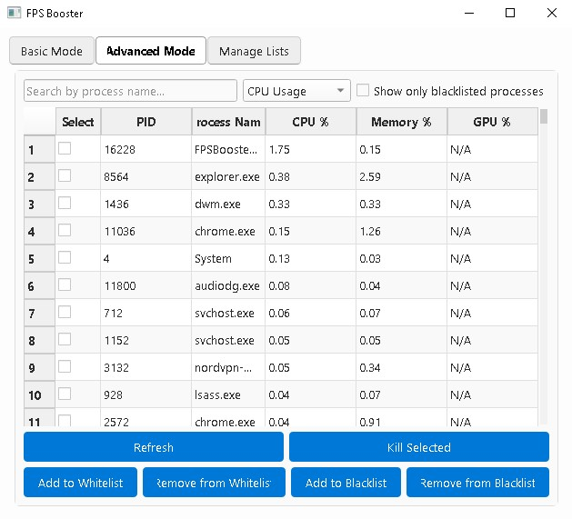
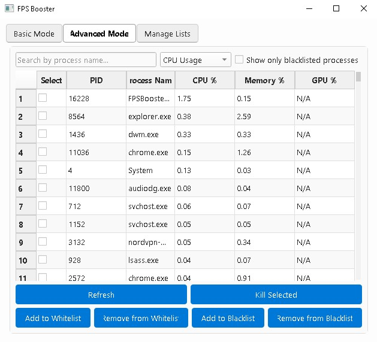
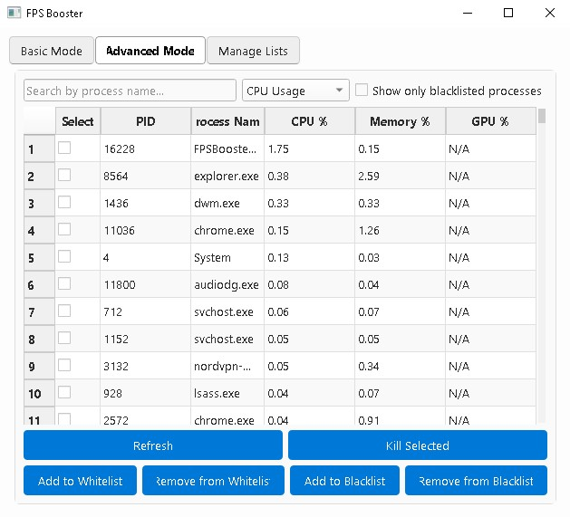
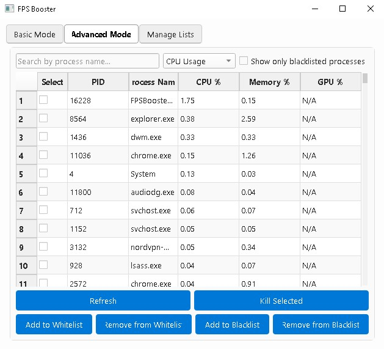

 

/Projects/FPS_Booster
I wanted to get experience with networking using a client-server-based architecture. I ended up choosing a calculator for its simplicity and flexibility, given I can add any function that comes to mind. As such, I created a calculator that starts a server and communicates with the client.
1. User Interaction through GUI
The application, built using JavaFX, offers a user-friendly interface...
2. Calculator Functionalities
The Calculator class handles arithmetic operations...
3. Visualization and GUI Handling
The Client class manages GUI creation...
4. Networking and Logging
The Network class manages network communication...
5. Data Handling and Storage
The IOHelper class offers methods...
6. Error Handling and Robustness
The system is designed to handle...